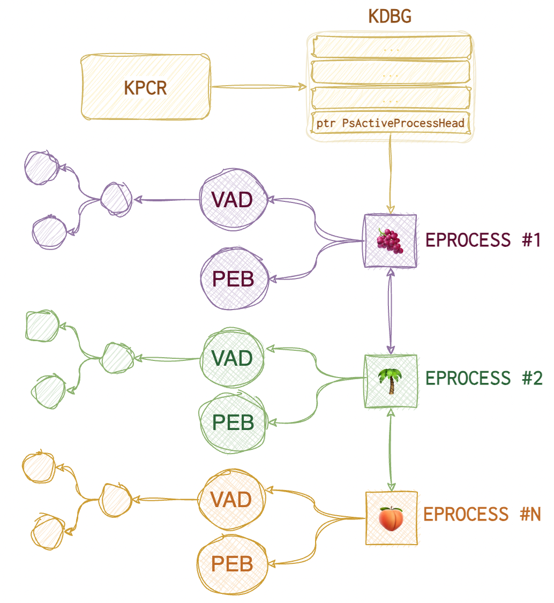
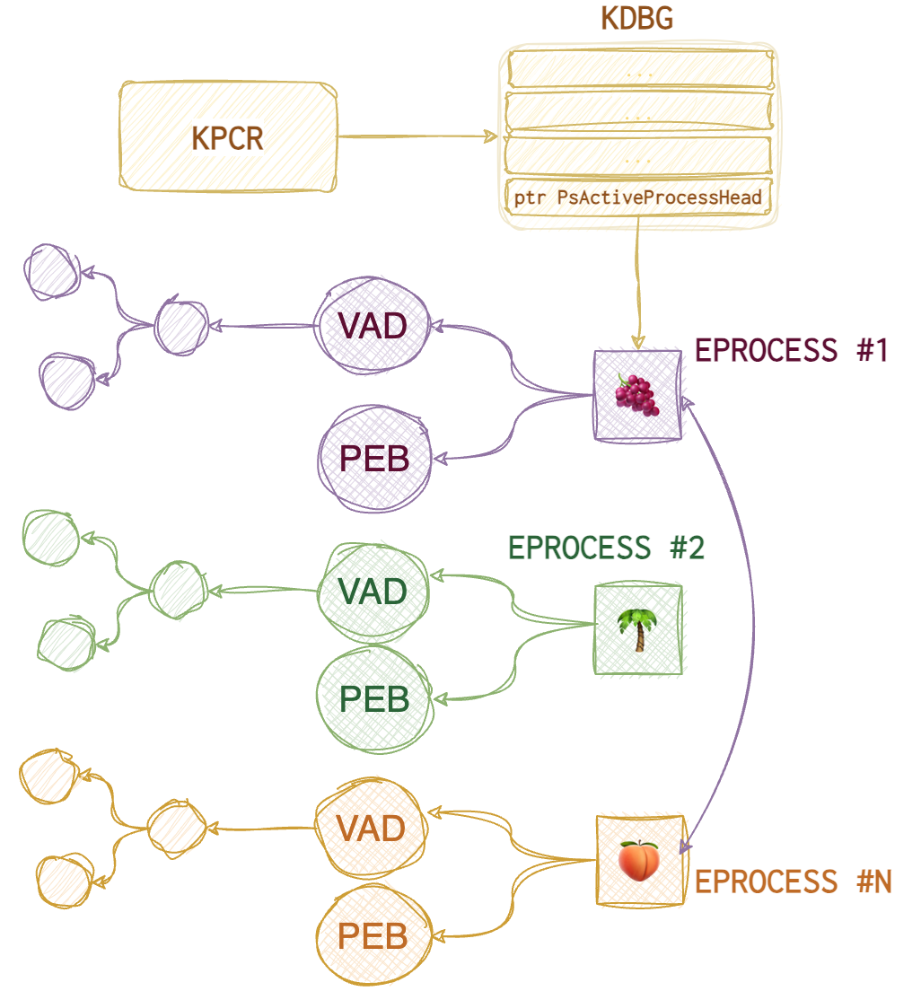
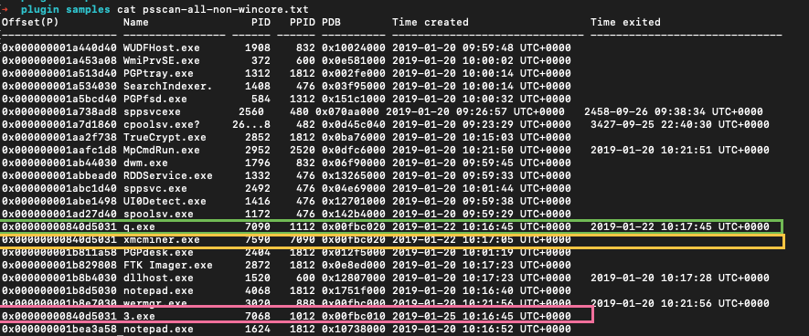
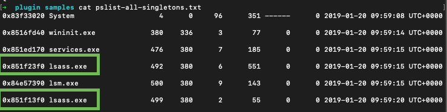

The number or applications installed or present on a device can sometimes be frightening. Not all of them are installed with the user’s consent. Some of them might be malicious. How does one spot these little pesky rodents?
System faults, errors and crashes can be spotted via System (errors, warnings and critical) and application events.
Windows
🪵 Event logs: ⚙️ System, 📱Application
| 🏺 Artefact | 📝 Comment |
|---|---|
| 🪵 Event logs | ⚙️ errors, warning and critical📱1000 (error), 1001 (WER), 1002 (hanging) |
| 📑 WER | 📂 C:\Microsoft\Windows\WER 🛠️ NinjaCopy can collect that. |
💭 RAM
The best place to find malware is in RAM. At some point, it needs to run. Either get the RAM copy or some alternative like a hiberfil.sys. There are several techniques to use to identify malware in the RAM image: signature-based search (like with most AV), contradictions (something is not right there), heuristic/behavioural (the system or a process is behaving weirdly and unexpectedly).
Deviations = investigative leads. Core Processes - essential for Win, run on any Win system under examination.

Parents and Children
- check names
- parent (for example,
svchost.exeis started byservices.exe) - expected path
- Singleton?
- Account (local system, mane, users)
- start time (boot time, later)
- Security identifier (SID)
svchost.exe - the most abused process. Check for the above deviations in the result.
One thing to do is compare the output from both psllist and psscan plugins to see if any rootkits are hiding. pslist relies on the doubly-linked EPROCESS list where each node represents a process’s meta and points to the next EPROCESS. The problem is that with the DKOM technique (Direct Kernel Object Manipulation), an attacker can unlink the rogue process from the EPROCESS list, thus hiding it from the OS eye.
Here is what the EPROCESS list looks like (roughly):
 And here is what happens when the process is unlinked:

As you can see, now the 🌴 process is “invisible” to the operating system. pstree plugin also relies on the same data structure, so, the only difference is in the presentation: you see a tree (child-parent relationships) instead of a list which is helpful too. psscan, on the other hand, doesn’t rely on the EPROCESS list; it scans the whole image for these EPROCESS objects (their signatures), whether they are linked to each other or not, and thus identifies the rogue processes. It can also identify terminated processes (and marks them as such).
❗️One very important thing to note is that
pslistshows the virtual address of theEPROCESSstructure (when it was in memory), whereas thepsscanshows the physical offset (from the raw image start). 32-bit virtual address consists of the following parts:10bfor page index,10bfor page table index,12bfor byte index. Additionally,pslistshows 🐾 number of threads, 🐾 number of handles, whilepsscanadditionally notes 🐾 page directory base offset (PDB) and 🐾 exit time.pstreehas the same info but in a different representation.
Both plugins also show the following data:
🐾 Process name 🐾 PID 🐾 PPID (parent PID) 🐾 Start time
🛠
EchoTrailis an excellent online tool for insights into the Windows core processes (expected boot time, children and parents etc).
You can use the 🛠 pstree plugin to create a diagram in .dot format, which can later be used to create a png
📘 vol.py -f imagename --profile prof pstree --output=dot --output-file=pstree.dot
📘 dot -Tpng pstree.dot -o pstree.png
Check parent processes of core processes:
📘 grep -E -i "(system|wininit|lsass|lsm|services|sms|taskhost|winlogon|iexplore|explorer|svchost|csrss)" pslist.txt > pslist-all-core.txt
📘 grep -E -i "(system|wininit|lsass|lsm|services|sms|taskhost|winlogon|iexplore|explorer|svchost|csrss)" psscan.txt > psscan-all-core.txt
We have the result of pslist:

We have several suspicious processes here: scvhost.exe (misspelled svchost.exe), some xminer.exe and a process with an intriguing name 3.exe. But these are the processes that we could have seen, should we use a Task Manager on a live system. What about terminated or unlinked processes?
To answer that we run psscan:

We saw the same 3.exe in the list. But also we see q.exe which was run for about a minute and during that time another processes was spawned - xmcminer.exe. q.exe was terminated that’s why we don’t see it in pslist results. But xmcminer.exe was not terminated but we still don’t see it in pslist. That means that the process was unlinked from a doubly-linked list of processes in memory (aka hidden).
Take unique process names, sort and count:
📘 cut -d " " -f 2 'psscan.txt' | sort | uniq -c | sort > 'psscan_proc_sorted.txt'
Also, think about what the attackers are likely to run. Some remote tools, for example? Like, WMI or PowerShell. When PowerShell remoting is used, wsmprovhost.exe process is running in RAM on the target (when ComputreName option is specified). Or if it’s an IIS server, there will be a w3wp.exe running in RAM. If the attacker manages to run a web shell, this process will spawn the tools that this web shell invokes, like net.exe or sc.exe.
🤨 If the user launches PowerShell, its parent will be explorer.exe. If admin - svchost.exe. PowerShell as a parent of cmd.exe is not necessarily suspicious but could be. 🤨 wmiprvse.exe is the one running WMI. If you see wmiprvse.exe spawns cmd.exe which does something with the registry or service could be something worth looking into.
🤨 Such processes like mshta, word or excel running PowerShell is also not a good thing.
🤨 ActiveScriptEventConsumer WMI spawns a rare process - scrcons.exe.
WinCore vs Non-Core
Check names of non-win processes:
📘 grep -E -i -v "(system|wininit|lsass|lsm|services|sms|taskhost|winlogon|iexplore|explorer|svchost|csrss)" pslist.txt > pslist-all-non-wincore.txt
📘 grep -E -i -v "(system|wininit|lsass|lsm|services|sms|taskhost|winlogon|iexplore|explorer|svchost|csrss)" psscan.txt > psscan-all-non-wincore.txt
Singletons
Check known singletons
📘 grep -E -i "(system|wininit|lsass|services|lsm)" pslist.txt > pslist-all-singletons.txt
📘 grep -E -i "(system|wininit|lsass|services|lsm)" psscan.txt > psscan-all-singletons.txt

In the example above there are two lsass.exe processes which is nonsense. Obviously, some investigative lead.
Boot Times
Check boot times:
📘 grep -E -i "(system|wininit|lsass|services|sms|lsm|csrss)" pslist.txt > pslist-all-boot.txt
📘 grep -E -i "(system|wininit|lsass|services|sms|lsm|csrss)" psscan.txt > psscan-all-boot.txt
System is a pivot point. Other processes that should start at boot, should have roughly the same starting date and time. pslist is pulling the information of a doubly-linked list (like a Task Manager). psscan - unallocated space (processes terminated or unlinked from this double-linked list).
Also, get all processes that did not start at boot time:
📘 grep -E -i -v 2019-01-20 'pslist.txt' > pslist_not_boottime.txt
📘 grep -E -i -v 2019-01-20 'psscan.txt' > psscan_not_boottime.txt
Deviations
Another helpful plugin to use would be the malfind, which tries to identify rogue processes looking for specific attack patterns automatically. And one of the most useful (at least, in my humble opinion) is the processbl which stands for process baseline and means you can compare the processes and DLLs in your image with some baseline image.
The baseline plugin has three parts: processbl, drivebl and servicebl.
⚙️ processbl compares processes and their loaded DLLs (relies on the same structure as pslist)
⚙️ drivebl compares the drivers
⚙️ servicebl compares the services
📘 vol.py -f imagefile --profile=prof -B ./baseline.img processbl -U 2 > error.log # -U - shows what's different and -K - what's not
Since this plugin does NOT compare the executable paths, only the names, it’s a good practice to use both -U and -K switches to see what’s really out of place.
Processes
Processes consist of the following elements that reside in RAM:
🏺 dlls and command line information 🛠️ dlllist 🛠️ dlldump 🛠️ ldrmodules
🏺 handles (files, directories, registry keys, mutants, semaphores, events such as threat notifications) 🛠️ handles 🛠️ mutantscan (gives more information than handles).
🏺 threads
🏺 memory sections 🛠️ getsids
🏺 sockets (ports and connections)
🏺 command line arguments and output
❗️
EPROCESSstructure only allows 16 bytes for the name. So, to see the full path and name seePEB.
You can dump the whole memory with 🛠️ memdump or just a specific process with 🛠️ procdump. 🛠️ vaddump can also be of help (a separate file for each section).
📘 vol.py -f image memdump -p PID --dump-dir=./some/
📘 strings -a -t d -e l file >> strings.txt # bstrings.exe
📘 sort strings.txt > sorted_str.txt
📘 grep
Command line
🛠️ consoles (prints commands and outputs, looking for CONSOLE_INFORMATION) and 🛠️ cmdscan (information from the command history buffer).
On WinXP csrss.exe and Win7+ - conhost.exe is responsible for command line history, which is stored in their memory, searching the VAD for DOSKEY structure (🛠️ cmdscan). By default, cmd.exe only keeps 50 entries in the buffer.
🛠️ cmdscan has the following list of data:
🐾 command process containing the cmd history 🐾 PID 🐾 Command History (its offset) 🐾 Application 🐾 Flags 🐾 First command (location) 🐾 CommandCountMax (size of the buffer) 🐾 LastAdded (entry last added to buffer) 🐾 LastDisplayed 🐾 Process Handle (the app handle number) 🐾 Command list
🛠️ consoles
🐾 Console process containing CONSOLE_INFORMATION structure 🐾 PID 🐾 Console (offset in process memory) 🐾 Offset where the console was found 🐾 CommandHistorySize (default number of commands kept in the buffer) 🐾 HistoryBufferCount 🐾 HistoryBufferMax 🐾 OriginalTitle (first title of console window) 🐾 Title (current title) 🐾 AttachedProcess (process name, PID and handle ID running within this process) 🐾 Command list 🐾 Screen (coordinates of console window) 🐾 Dump (console screen output)
Files
🛠️ filescan helps to identify files, 🛠️ handles with -t set to File can also be used. Then, 🛠️ dumpfiles can be used to get those files for further analysis. Scans for File_Objects from memory. It’s recommended to narrow down the output with -Q (offset) or -r (regex). Each File_Objects contains three Section_Object_Pointers: ImageSectonObject (memory-mapped binaries), DataSectonObject (memory-mapped files), and SharedCachedMap (parts cached by Windows Cache manager).
📘 vol.py -f image dumpfiles -n -i -r \\.exe --dump-dir=./path/ # use the original name when printing the output, -i - ignore case, -r - regex
❗️The 🛠️
dumpfilesplugin will only look forFILE_OBJECTSwithin the VADtree or in process handles. So it will not recover maliciously manipulated files. Also, special files like$MFTor$LogFileare not in VAD. Use 🛠️filescanto find interesting things and then 🛠️dumpfilesto dump them.
Shimcache
🛠️ shimcachemem. 🏺 Shimcache updates are not writing updates to disk until the system is shut down or rebooted. So, some saucy stuff can be there.
📘 vol.py -f image --output=csv --output-file=name -P # -P print the VA and PA offsets.
DLLs
🛠️ dlllist relies heavily on PEB and shows the following data:
🐾 Base offset (used to dump the DLL with 🛠️ dlldump later)
🐾 DLL size
🐾 Load count (statically or dynamically loaded)
🐾 Load time (you can spot if the DLL was loaded after runtime giving out possible injection)
🐾 DLL file path (useful to spot deviations)
🐾 Command line
❗️There can be lots of DLLs loaded into the processes, better run with the
-pswitch.
Use 🛠️ dlldump to dump the DLL of interest. If no parameters are provided, it will dump EVERYTHING. But if you want to narrow down the analysis, use both -p PID and -b baseoffset. You can also use -r regex to find the DLL by name. The base offset can be provided by the 🛠️ dlllist.
Handles
There are many handles, and it would be nearly impossible to analyse them ALL in time. To ease up your investigation, keep in mind that there are several types of handles that can be passed to the handles volatility plugin as a -t switch value:
🫳🏼 process 🫳🏼 file 🫳🏼 thread 🫳🏼 event 🫳🏼 key 🫳🏼 port 🫳🏼 wmiguid 🫳🏼 timer 🫳🏼 iocompletion 🫳🏼 windowstation 🫳🏼 directory 🫳🏼 token 🫳🏼 semaphore 🫳🏼 mutant
filescan (scan for FILE_OBJECTS) and mutantscan (scan for _KMUTANT) plugins can scan the entire image for different handle types, which is useful when finding unallocated data.
📘 vol.py -f image --profile=prof -t File
Drivers
🛠️ modules, 🛠️ modscan and 🛠️ driverbl give us a list (hopefully) of suspicious drivers. To get its base offset, use 🛠️ modscan or 🛠️ modules. Once we have the base offset of the nefarious driver, use 🛠️ moddump to retrieve it for further inspection.
🐾 driver name 🐾 base offset 🐾 output filename
❗️ The offset provided by the 🛠️
ssdtplugin is the function offset, not that of the driver!
📘 vol.py -f image ssdt | egrep -v `(ntoskrnl|win32k)`
📘 vol.py -f image modules | grep something
📘 vol.py -f image moddump -b offset --dump-dir=./filename
Permissions
Permissions on Windows are specified with the tokens and SIDs. 🛠️ getsid volatility plugin can display the security identifiers for the given process.
Network
There are three main data to look out for when analysing network artefacts:
🏺 ports. Look out for non-browser processes listening on 443, 80, 8080 or browsers listening on anything other than that. RDP (3389) is something to look closer at if this type of connection is uncommon for this machine. PowerShell remoting - 5985.
🏺 connections. Check the IP for nefariousness. DNS requests to unusual domains or TXT records. Workstation-to-workstation connections are not usually common and often show lateral movement. RDP to the local host is especially suspicious (VPN?).
🏺 processes (those responsible for that network connection)
❗️ Network sockets have creation times, and terminated processes can be recovered.
Volatility plugins follow the single-linked list (for older machines): 🛠️ connections (active, open), 🛠️ sockets (active). Volatility plugins scan the image for known structures (for older machines): 🛠️ connscan, 🛠️ sockscan (_ADDRESS_OBJECT).
🛠️ netscan combines the functionality of the above plugins and can be used against Vista+. Shows the following data:
🐾 memory offset 🐾 protocol 🐾 local IP 🐾 state (for TCP) 🐾 PID 🐾 process owner name 🐾 creation time
Injections
Most information is taken from here, but more visualisation is added. The screenshots from IDA Pro are also copied from that blog post. I will start with a brief overview of the volatility plugins used to analyse injection, and you can see the list below for more detailed analysis instructions. For more, see the Attacks DB -> Binary -> Injections article.
){kind=link}
🛠️ Get-InjectedThread to do live analysis for injections and 🛠️ hollows_hunter to spot more advanced techniques, also live.
- Classic. A malicious DLL’s path is copied in the memory space of a legitimate running process to be loaded in runtime.
- PE injection. A malicious DLL itself is copied into the memory space of a legitimate running process.
- Process Hollowing. An already loaded good process is fully overwritten with something that could be better. Imagine that the legit code was scooped out.
- SIR (Suspend, Inject, Resume). EIP register’s value of a running thread is substituted. This is the chain of function calls needed for this attack.
- Hook. Uses
SetWindowsHookEx()API function. - Registry poisoning. Using the registry to inject. These are the keys that can be used for injection.
- Upon
User32.dllloadmal.dllwill be loaded (wheneverCreateProcess(),CreateProcessAsUser(),CreateProcessWithLogonW(),CreateProcessWithTokenW(),WinExec()are called,mal.dllwill be called):- 🔑
HKLM/Software/Microsoft/WindowsNT/CurrentVersion/Windows/Appinit_Dlls - 🔑
HKLM/Software/Wow6432Node/Microsoft/WindowsNT/CurrentVersion/Windows/Appinit_Dlls - 🔑
HKLM/System/CurrentControlSet/Control/Session Manager/AppCertDlls
- 🔑
- IFEO - usually used to attach a debugger. The value of the
Debugger Valueis changed.- 🔑
HKLM/Software/Wow6432Node/Microsoft/WindowsNT/CurrentVersion/image file execution options
- 🔑
- ❗️
mal.dllneeds to be present on disk. - ❗️ There are “smithereens” left in the registry that can be a good lead in an investigation.
- Upon
- APC.
- EWMI with
SetWindowLong() - SHIMS. My favourite and the most useful for malware:
DisableNX,DisableSEH,InjectDLL. - Userland rootkit. Rootkits are usually associated with the kernel space. However, there are also userland rootkits out there. There are two main techniques known: IAT and inline. When the IAT hooking technique is used, malware changes the import address table. This way, when a good application calls some function from this tampered DLL, the replaced function is executed instead. With inline hooking, the malware modifies the function’s body itself.
- Reflective. This means not using LoadLibrary or Windows Loader to load the code. This allows the malware to avoid being tracked by the system. The code can be injected directly from memory. The only legit way to load code is from disk and only sections with code are supposed to be marked as
Page_Execute_ReadWrite. So, the memory analysis process to identify this is as follows:- Walk through the VAD and inspect each section.
- Detect unusual permissions like
Page_Execute_ReadWrite, and if it is mapped to disk.
🛠️ ldrmodule. Detects unlinked and unmapped processes. It checks and follows these three doubly-linked lists in the PEB and the VAD, then scans the image for the structures, comparing the results from VAD and PEB. Such plugins as dlllist will show only what’s not unlinked, and ldrmodule will highlight deviations.
🐾 PID
🐾 p_name
🐾 base offset (location in the image)
🐾 PEB InLoadOrderModule list (InLoad) - doubly-linked list
🐾 PEB InInitializationOrderModule list (InInit) - doubly-linked list
🐾 PEB InMemoryOrderModule list (InMem) - doubly-linked list
🐾 VAD Tree MappedPath ❗️In case you don’t see anything here, the program was not loaded from the disk, which is almost always suspicious even if all the three PEB lists show True for this process.
📘 vol.py -f image ldrmodules -p PID
Classic and PE injection techniques use CreateRemoteThread, and classic uses LoadLibraryA WinAPI call. Since WinAPI was used, it will look very similar to a legit process. The best bet would be to check the MappedPath column for unusual locations.
❗️
dlllistwill also show this info since the malware is not hiding itself with this technique, just injecting.
🔎 If
MappedPathis empty and all three PEB lists are empty, the file was not loaded from the disk, which is an excellent indication of injection. 🔎 WhenMappedPathis empty for the memory section that is supposed to belong to the executable itself - process hollowing.
🔎 Using this module, ✍️ You can grep for
Falseto narrow the search. 🔎 False positives: unloaded DLLs not yet removed from memory untilFreeLibraryis called; strange extensions like.fon,.muietc. will not be present in the PEB lists but in the VAD. Since they are all PE files, they will appear suspicious when they are not; PEB is only aboutexeanddll.
Three PEB doubly-linked lists are useful for detecting injections. “Good” programs will be present in all three, showing True in the corresponding columns in the output. Some legit programs (a limited number) will be absent from some lists. Also, process executables will always be missing from the InInit list. Sometimes unloaded DLLs that weren’t yet removed from the process memory might also be showing there.
🛠️ malfind. Find hidden and injected code and dumps interesting parts of memory. It can help identify more advanced injection techniques like reflective injection.
🐾 p_name 🐾 PID 🐾 Starting offset 🐾 Ending offset 🐾 Tag (type of memory section) 🐾 Hits (from YARA) 🐾 Protect (memory permissions)
It also dumps some starting portions of the memory section (64 bytes) so the analyst can easily spot the MZ header or the shellcode. Sometimes, the malware gets very clever, padding the section with something malicious with ADD [EAX], AL that looks like garbage for the analyst, or overwrites the MZ header, clears the entire MZ header or jumps to the code placed later. The best approach here is to dump this section and review it fully.
🛠️ hollowfind. Identifies main hollowing techniques. Compares PEB with VAD, looks for unusual section permissions (similar to malfind).
🛠️ threadmap. Analyse threads and find process hollowing countermeasures. Each threat is mapped to its corresponding VAD entry; the plugin test this entry and the code contained to identify anomalies. Harder to hide and manipulate, there always needs to be a threat pointing to the injected code.
Hooks
SSDT
The system Service Descriptor Table hooks the system calls. This technique involves patching one or more pointers that point to the lookup table for system functions. Legit calls are always either to ntoskrnl.exe or win32k.sys.
🛠️ ssdt. It helps identify SSDT hooking by looking for references other than ntoskrnl.exe or win32k.sys. In order to remove legit hooks, use the following grep:
📘 ssdt_output | egrep -v `(ntoskrnl\.exe | win32k\.sys)`
On Vista+ this technique is harder to pull off since the Kernel Patch Protection (PatchGuard) will crash the processes attempting to do this (unless there is a vulnerability).
🐾 Tables entry 🐾 function offset 🐾 function 🐾 function owner
Note the hooked functions, as they can give a clue to the malware’s function.
🛠️ ssdt_ex can be used to identify and dump SSDT entries.
IDT
IDT (Interrupt Descriptor Table). Not very common in modern systems. 🛠️ idt. Helps identify IDT technique.
IAT
IAT (Import Address Table) and Inline API. User-mode DLL function hooking can be spotted with 🛠️ volatility apihooks plugin. As the output can be overwhelming, use -Q to only scan critical processes or/and -R to skip kernel mode checks.
✍️ False positives to eliminate:
setupapi.dll,mswsock.dll,sfc_os.dll,adsldpc.dll,advapi32.dll,secur32.dll,ws2_32.dll,iphlpapi.dll,ntdll.dll,kernel32.dll,user32.dll,gdi32.dll.
Unknown in the Hooking module shows that it is jumping into a memory section that’s not mapped to disk.
IRP
IRP (I/O Request Packets) for driver hooking, low-level stuff. 🛠️ driverirp. It helps in identifying the IRP technique.
Use 🛠️ psxview plugin for the cross-view analysis. Eliminate false positives by using -R (known good). It includes the data from the following plugins: pslist, psscan, pspcid (keeps track of processes and PIDs), thrdproc (reviews all threads in memory and collects processes using thread parent id), csrss (csrss.exe keeps a handle to each process started after it), session (process for each logon session), deskthrd (identify processes via threads attached to each Windows desktop).
✍️ If you see
Falsein all the columns except for 🛠️psscan-> the process was terminated.
🛠️ modscan (scanning the memory image) and 🛠️ modules (uses the list). This plugin looks for loaded kernel modules and drivers. Run both to see the difference, then you might use 🛠️ devicetree to see the same info better visualised. Also, use the plugins for hooking identifications and then, you can either use a baseline image with 🛠️ driverbl plugin or dump the memory area with the 🛠️ moddump.
DKOM
Direct Kernel Object Manipulation. Unlinks the process from the EPROCESS doubly-linked list. Process unlinked in this way won’t be visible to pslist plugin or tasklist.exe.
Common Malware
Cobalt Strike
CS usually spawns a child process for each activity to make itself more persistent. These are called sacrificial processes. A good approach would be to look for exited child processes under PowerShell or WmiPrvSE.
IOCs
🛠️ openioc_scan, 🛠️ yarascan (vol plugin) and 🛠️ page_brute.py.